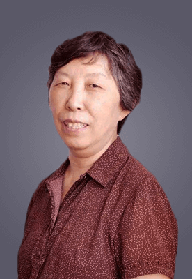

当前位置:
首页>
专家团队

刘靖
刘靖
1987年毕业于北京医科大学（现北京大学医学部），硕士学位，一直从事儿童少年精神医学临床、科研和教学工作，具有丰富的儿童少年精神障碍诊断和治疗经验。现任主任医师 儿童病房主任 硕士研究生导师， 中华医学会精神病学分会儿童青少年精神病学组秘书长 亚洲儿童青少年精神医学及相关学科学会副主席 北京市孤独症儿童康复协会副会长， 中国残疾人联合会孤独症委员会委员等
主要研究领域：儿童青少年精神疾病（儿童孤独症 儿童青少年精神分裂症等）的病因 诊断和治疗 主要医疗工作领域： 各种儿童青少年精神障碍的诊断和治疗 包括：儿童孤独症，儿童少年精神分裂症，儿童情感障碍，儿童情绪障碍，注意缺陷多动障碍， 抽动障碍，进食障碍，癫痫所致精神障碍，睡眠障碍等。
1987年毕业于北京医科大学（现北京大学医学部），硕士学位，一直从事儿童少年精神医学临床、科研和教学工作，具有丰富的儿童少年精神障碍诊断和治疗经验。现任主任医师 儿童病房主任 硕士研究生导师， 中华医学会精神病学分会儿童青少年精神病学组秘书长 亚洲儿童青少年精神医学及相关学科学会副主席 北京市孤独症儿童康复协会副会长， 中国残疾人联合会孤独症委员会委员等
主要研究领域：儿童青少年精神疾病（儿童孤独症 儿童青少年精神分裂症等）的病因 诊断和治疗 主要医疗工作领域： 各种儿童青少年精神障碍的诊断和治疗 包括：儿童孤独症，儿童少年精神分裂症，儿童情感障碍，儿童情绪障碍，注意缺陷多动障碍， 抽动障碍，进食障碍，癫痫所致精神障碍，睡眠障碍等。